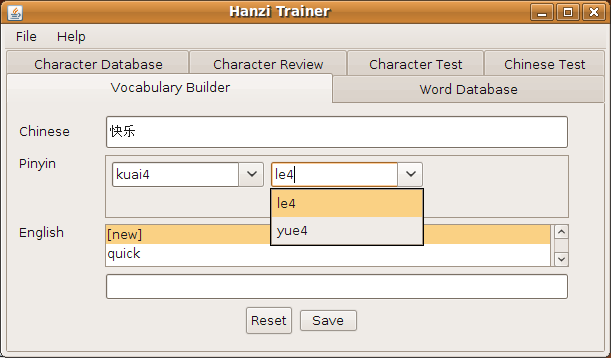
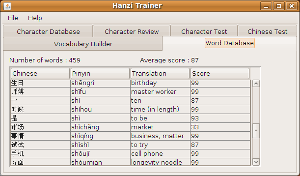
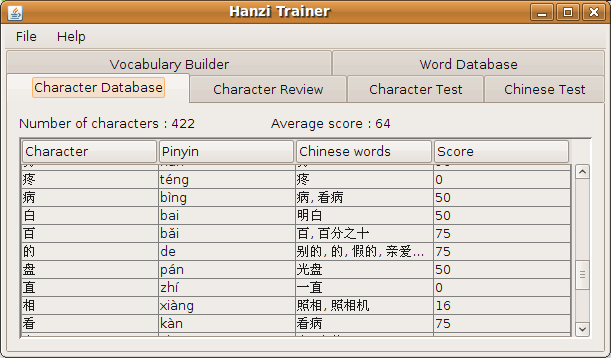
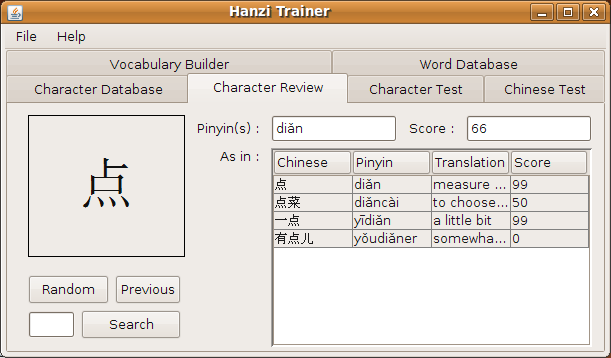
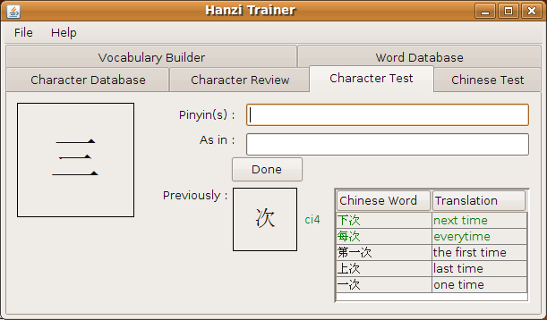
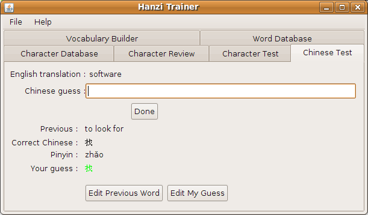

Hanzi Trainer
Introduction / Story
While I was living in Beijing and studying my Chinese, I tried many different methods to study my mandarin, but could not find one that just would suit me. I also got a few books and dictionaries, each having its own specific purpose. And I got a big box of flash cards.
The latter help quite a bit, but as I was learning more, I got frustrated of not finding in my box some of the characters I just have learnt and wanted to study. The ones I had, I needed to sort them out of the box and then I had my stacks of flash cards : the ones I am fully familiar with (I could write them), the ones I know well (I can recognize without any problem), the ones I still need to study and finally the ones I don't know at all.
With all that frustration and also some free time during the cold Beijing winter, I started to write my own Java program to help my study, make it a little more fun and try different kinds of exercizes.
It is still under development, I work on it when I have some free time and I feel like it, so I am not sure it will ever become a "finished" program. But I try to keep it 'stable' as much as possible and just keep adding what I feel would make it more efficient and friendly.
If you try using it, if you like it (or if you don't), if you have some suggestion or even better if you want to help, do not hesitate to drop me a note.
I have tested it and been using it on both Linux and Windows XP platforms without any problem (provided the machine is already setup to be able to enter Chinese characters).
Manual
The application is divided into separate screens
Vocabulary builder

Let's you enter new vocabulary.
Enter the Chinese expression in the first field.
The second field will automatically create the number of fields required for you to enter the pinyins. If the characters have already been used, it will give you a choice with the known pinyin (but you can still edit if needed).
In the last field, you have a choice to enter the new translation, edit a known one or delete an existing one.
Word Database

This screen shows you a table of all the known words in the database
Character Database

This screen shows you a table of all the known characters in the database
Character Review

This screen let you browse or search for known character and give you information about those.
Character Test

This screen is to test your knowledge about characters. You are asked to enter the pinyin(s) for a particular character and then enter as many words as you can remember that contain that character.
Chinese Test

This screen asks you to translate an English word into Chinese.
For Developpers, ideas
Any help is welcome.
If you think there is anything you would like to contribute, please contact me. I am using NetBeans to do the development on this project. I try to share all the files necessary for somebody to be able to setup another environment, but I did not check myself.
There are a lot of things that could be done, some probably should, some others are more crazy ideas :
-
Setup more 'tests' (next one on my list is specific to tones).
-
Make the interface more intuitive, more friendly looking...
-
Use CEDICT to automatically find the pinyins (and maybe translation) for a new expression/word.
-
Find the characters that are often confused for each other or that look alike. Maybe make a MCQ test with that
-
Link to outside websites/application (zhongwen.com, import/export vocabulary lists compatible with other programs)
-
Adapt the program to work with Japanese Kanjis, Traditional characters (different romanization), Korean (?)...
If you want to know more about how the application and database system is design, please follow this link.
Acknoledgments
I am using third party tools or libraries. I do my best to not violate any licensing (please let me know if you ever think I might, I am not a lawyer and have not wrongful intentions...). At least I would like to give back credit to :
* NetBeans I use for editing, running and debugging this code and desiging the GUI.
* H2, this is the database system I use in the background, it has always been running very reliably and fast.
* In most recent versions, I am also using a fast MD5 implementation
Some notes
I am running HanziTrainer both on Linux (Ubuntu 9.04) and Windows. I also develop on both those platforms using NetBeans.
On Linux, I recently had a problem with fonts both with the SUN JDK and the OpenJDK. For the Sun JDK, here is how I fixed it :
-
I copied my Windows SimSun font to /usr/share/fonts/truetype/ttf-zh_cn/
-
Go to that directory and run 'sudo mkfontscale' and 'sudo mkfontdir'
-
Edit /usr/lib/jvm/java-6-sun/jre/lib/fontconfig.properties to add this font. As an example, here is my version of this file.
-
If you have (like me) several jdk installed and you want to change, run 'sudo update-java-alternatives -s java-6-sun'
-
To change the jdk netbeans will use, edit /etc/netbeans.conf
Contact
You can contact me at : matthieu[dot]jeanson[at]gmail[dot]com
Matthieu Jeanson - May 29, 2009 - Designed and written with vim